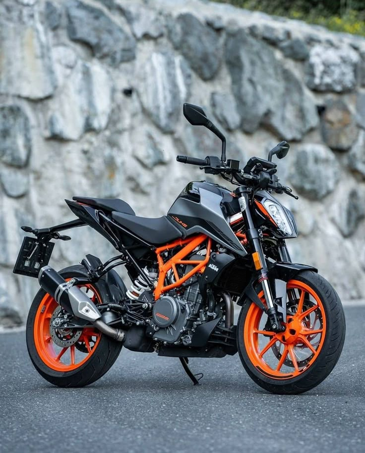
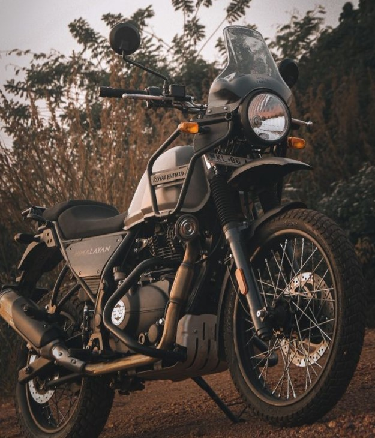
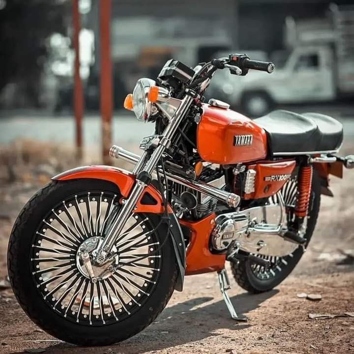

BIKE COLLECTION
Duke 390 bike
The KTM Duke 390 is a popular naked street bike known for its performance and premium features in the 300-400cc segment. Here are the key benefits of the Duke 390:

Performance
Powerful Engine: 373cc liquid-cooled, single-cylinder engine producing around 43 hp.
Lightweight Chassis: Around 170 kg (kerb weight), giving it an excellent power-to-weight ratio.
Quick Acceleration: 0–100 km/h in under 6 seconds, suitable for spirited.
Metzeler or Michelin Tyres: High-grip tyres enhance confidence on twisty road
Good Build Quality: High-quality materials and premium feel for the price.
Relatively Affordable Maintenance: Compared to bigger bikes, the Duke 390 has manageable service Value for Money
Beginner to intermediate riders looking for performance.
Himalayan bike
The Royal Enfield Himalayan is a popular adventure touring motorcycle in India and around the world. It's known for being rugged, reliable, and relatively affordable. Here are the main benefits of owning and riding a bike for off-road and on-road use — perfect for touring, mountain roads, and rough terrains

Built for off-road and on-road use — perfect for touring, mountain roads, and rough terrains.
High ground clearance and long-travel suspension make it great for trails, potholes, and river crossing
R15 v5 bike
The Yamaha R15 is a popular sportbike known for its performance, styling, and efficiency in the entry-level segment. Here are some key benefits of the R15:

The Yamaha R15 V5 (Version 5.0) is the latest iteration of Yamaha’s popular entry-level supersport bike, the YZF-R15. Here's a breakdown of its key benefits and upgrades over the previous version:
Key Benefits of Yamaha R15 V5
1. Updated Design (R7-Inspired Styling)
Sharper, more aggressive fairing and LED projector headlight.
Tail section and bodywork influenced by the larger Yamaha R7 and R1.
Improved aerodynamics.
Rx 100 bike
Lightweight and agile: Excellent for city commuting.
Powerful 2-stroke engine: Quick acceleration and fun ride experience.Classic styling: Highly regarded for its retro looks and cult following

This is a legendary 2-stroke motorcycle from the 1980s–90s, known for performance and style. Some benefits:
Lightweight & Fast: At ~98 kg, it offers excellent power-to-weight ratio and quick acceleration.
Iconic Design: Retro styling appeals to vintage bike enthusiasts.
Easy to Maintain: Simple mechanics, widely available parts.
High Resale Value: Considered a collector’s item in good condition.
Strong Cult Following: Good community support for restoration and modification.
Note: It's not eco-friendly by modern standards due to 2-stroke emissions
If you’re asking about the Telugu film "RX 100", here are some potential "benefits" from watching it:
Intense Plot: A gritty, emotional revenge love story with unexpected twists.Strong Performances: Breakout roles for actors like Kartikeya Gummakonda and Payal Rajput.
Popular Music: Songs like "Pillaa Raa" became chartbusters.